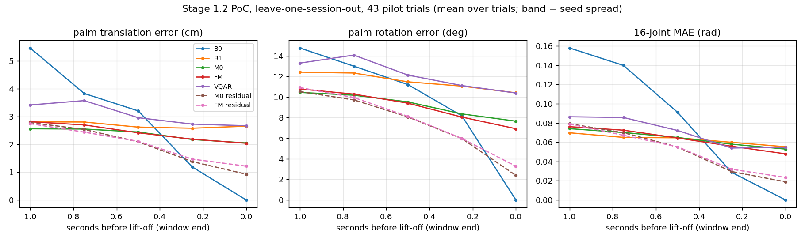
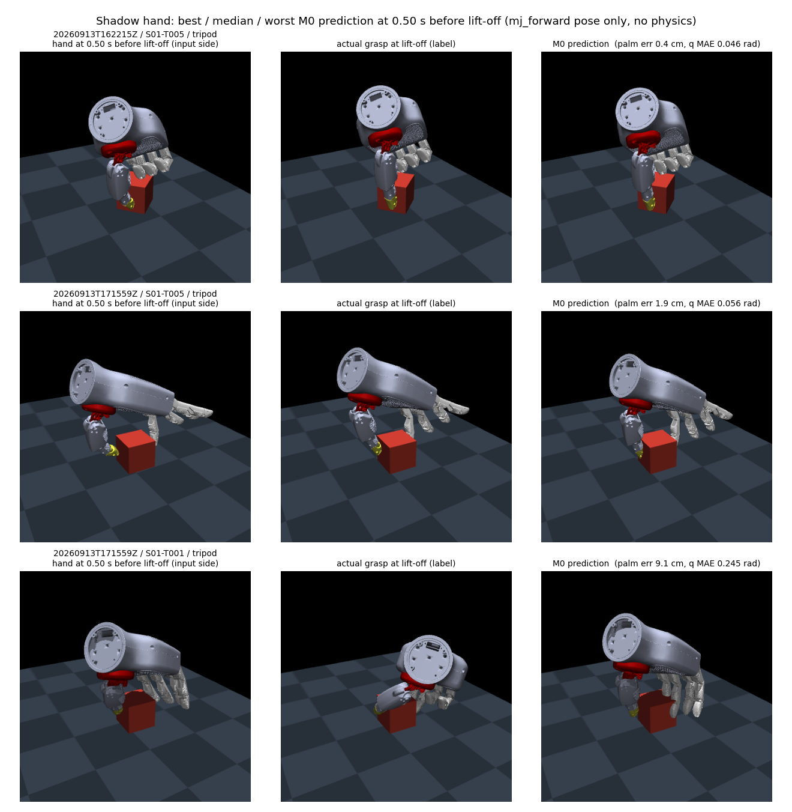

这是 Stage 1.2 计划的第一次实际运行：用 Stage 1.1 当天采集的 95 条 Quest→retarget→L20 示教，按计划的阶梯（B0／B1／M0／方案 A／方案 B）训练并在留出的 session 上比较，附影子手视频。结论先行：抬离前 1 s，学习模型比「保持当前姿态」好 3 cm、比最近示教和常数预测好 0.5 cm；残差形式的小模型在抬离时刻误差 0.9 cm；方案 B（Flow Matching）与确定性回归无差异且候选无多模态，方案 A（VQ-VAE＋AR）停在码本重建；一个只看当前 25 维状态的线性模型在 1 s 提前量上是最好的。数据侧的两个发现比模型更重要：抓取提示与方向提示都没有在标签里留下痕迹。
stage11_training_ready=False）。这里的数字是 PoC，用来决定协议和模型下一步怎么改。| 项 | 值 |
|---|---|
| session 目录 | 10 个（2026-09-13）。6 个 pilot（10／10／2／10／1／10 条）＋ 1 个正式 session（52 条，pinch-only，四个方向提示）有 Quest 记录；另 4 个目录 3 个启动即中止、1 个在第 1 条 trial 中结束且 Quest 未确认录制 flush，已移入 quest_sessions/diagnostics/，没有完成的 trial 丢失 |
| 可用 trial | 95，全部 transferred、0 掉落；接近段（Quest trial 开始 → 抬离）中位 2.1 s |
| 标签 | 抬离瞬间（Quest 相位 Transport 第一个物理样本）的 sim-actual L20 状态：掌部相对 cube 的位置 3 ＋ 旋转 6D ＋ 16 个主动关节，共 25 维；未复核 |
| 输入 | 过去 1 s，20 Hz × 26 维：头显施加的 mocap 腕部目标相对 cube 的位置 3 ＋ 旋转 6D（人手腕代理，与实际掌部差 6 mm 中位）、retarget 目标关节 16、有效位 1 |
| 划分 | 留一 session（7 折），每条 trial 恰好测试一次；归一化只用训练折 |
| 代码 | Dex_Hand/human_machine_interaction/training/stage12_intent/（build／run／report／visualize／predict-heldout／animate／closure-replay）；数据集 training/artifacts/stage12_intent/dataset_all.npz；结果 results/<run>/results.json；训练在家用 4090（Windows 11，torch 2.11 cu128） |
left_home 在 transfer 模式下不是接近起点。home 中心设在提示时刻，也就是上一条 cube 放下的地方，手要到搬运时才离开 home 半径；33 条有该事件的 trial 里 22 条在抬离之后触发。接近段改按 Quest trial 边界切。| 项 | 值 |
|---|---|
| 评测时刻 | 窗口终点在抬离前 τ = 1.0／0.75／0.5／0.25／0 s；指标 = 掌部平移误差 cm、旋转角误差 °、16 关节 MAE rad，按 trial 取均值；影子手关节限位检查 |
| B0／B1／常数 | 保持当前 sim-actual 状态；最近训练窗口的终点；训练折标签均值（3.52 cm） |
| M0 | MLP 520→256→128→128→25，AdamW 1e-3、wd 1e-4、cosine、batch 128、400 epoch；「残差」版预测相对窗口末帧 [p_OH, R_OH, q_ref] 的变化 |
| B · Flow Matching | xτ=(1−τ)ε+τy，MLP 速度场（条件 128 维、隐层 256×3），800 epoch，Euler 32 步，k=16 候选；同时训练绝对与残差两种目标 |
| A · VQ-VAE＋AR | 1 s 状态块 → 1D 卷积编码 → 5 token，码本 64×64，EMA 更新＋数据初始化；3 层因果 Transformer，条件帧前缀，终点 token 权重 2；终点从解码序列按 τ 读出 |
| seed | 0／1／2（43 条 pilot 的首个 run 三 seed 均在 ±0.1 cm 内）；本页表格为 seed 0 |
| run ID | full-*／seed1-*／seed2-*（43 条 pilot），all7-abs／all7-res（95 条 7 折），fms-abs、dps-abs、all7-linear、all7-lastframe，heldout_formal.*（视频用，checkpoint 已存） |
三列，因为各折不一样：正式 session 作测试只用 43 条 pilot 训练，是最诚实的跨 session 数字；6 个 pilot 折的训练集多了 52 条正式数据；全部 95 混合两者。每格：掌部误差 cm，抬离前 1.0 · 0.5 · 0.25 · 0 s。
| 模型 | 正式 session 作测试 | 6 个 pilot 折（合并） | 全部 95 |
|---|---|---|---|
| B0 保持当前姿态 | 4.54 · 2.98 · 1.39 · 0 | 6.57 · 3.47 · 0.94 · 0 | 5.46 · 3.20 · 1.19 · 0 |
| B1 最近示教 | 2.72 · 2.66 · 2.51 · 2.63 | 2.91 · 2.56 · 2.66 · 2.68 | 2.81 · 2.62 · 2.58 · 2.65 |
| M0 绝对 | 2.42 · 2.40 · 2.17 · 2.06 | 2.73 · 2.48 · 2.18 · 2.03 | 2.56 · 2.44 · 2.17 · 2.05 |
| B Flow Matching（16 候选均值） | 2.62 · 2.34 · 2.20 · 2.20 | 3.04 · 2.50 · 2.16 · 1.84 | 2.81 · 2.41 · 2.18 · 2.04 |
| A VQ-VAE＋AR | 2.74 · 2.55 · 2.50 · 2.51 | 4.23 · 3.44 · 2.99 · 2.85 | 3.41 · 2.95 · 2.72 · 2.67 |
| M0 残差 | 2.55 · 1.93 · 1.45 · 0.94 | 3.06 · 2.29 · 1.30 · 0.91 | 2.78 · 2.09 · 1.38 · 0.92 |
| B Flow Matching 残差 | 2.42 · 1.86 · 1.55 · 1.26 | 3.13 · 2.40 · 1.37 · 1.16 | 2.74 · 2.11 · 1.47 · 1.21 |
关节 MAE 同序：M0 绝对在正式折 1 s 时 0.064 rad，残差版抬离时 0.019 rad。43 条 pilot 的首个 run 配对 bootstrap：M0 − B1 = −0.48 cm，95% CI [−0.93, −0.06]；M0 − 常数 −0.56 [−1.04, −0.07]；FM − M0 +0.03 [−0.29, +0.34]。多 52 条正式数据后 pilot 折 1 s 误差 2.96 → 2.73，残差版抬离时 1.42 → 0.91 cm。

mj_forward 摆姿势并按分割掩码合成，没有物理。 [mp4 ↗]能看到的规律：绿影子在抬离前约 0.5 s 落到蓝影子上；最差那条（S01-T008）操作者先把手停在 cube 旁等了一会儿，模型以为还要移 12 cm，而方案 A 倾向「保持现状」反而对；黄点始终挤在一起，Flow Matching 没有给出第二种抓法。

方案 B 首轮按计划只生成终点。追问「Flow Matching 能不能像 A 那样生成未来序列」后加了两个 Diffusion Policy 形式的模型，都生成未来 1 s 的 20 步 × 25 维（相对当前状态的残差，8 条样本）：FMS 用 flow matching 目标，DPS 用 DDPM ε 预测＋DDIM 采样。
| 模型 | 终点 cm（正式折 / 全部 95，τ = 1.0 · 0.5 · 0.25 · 0） | 未来 1 s 掌部 ADE cm | 8 样本互差 @1 s |
|---|---|---|---|
| M0 残差（只有终点） | 2.55/2.78 · 1.93/2.09 · 1.45/1.38 · 0.94/0.92 | — | — |
| A VQ-VAE＋AR | 2.74/3.41 · 2.55/2.95 · 2.50/2.72 · 2.51/2.67 | 3.33（一折 5.95） | — |
| FMS | 3.40/3.78 · 2.72/3.10 · 2.70/2.58 · 2.20/2.10 | 2.66 | 6.5 cm |
| DPS | 4.33/4.99 · 4.21/4.40 · 3.53/3.33 · 2.55/2.44 | 3.65 | 10.7 cm |
作为轨迹生成器 FMS 最好，且 flow matching 目标在这份数据上全面好于 DDPM 目标；作为终点预测器没有序列模型赢过残差 M0：500 维生成目标对两千个窗口太大，单条样本 6–9 cm，只有 8 条均值可看。A 的码本没有塌缩（64 码全用，perplexity 53–58）但重建误差 1.4–3.8 cm，已经和 M0 的总误差一样大。
PCA：520 维输入 21 个主成分占 90% 方差；16 个标签关节 5 个主成分占 90%，掌部位姿 3 个。线性岭回归的通道消融（抬离前 1 s）：只用手腕 9 维 2.32 cm，只用手指 16 维 5.23 cm。三个残差模型：
| 模型 | 输入 | 1.0 s | 0.5 s | 0.25 s | 0 s | 关节 rad @1 s |
|---|---|---|---|---|---|---|
| RL 线性岭回归 | 当前帧 25 维 | 2.10 / 2.26 | 2.00 / 2.06 | 1.90 / 1.87 | 1.84 / 1.79 | 0.077 |
| RW 线性，PCA-34 整窗 | 1 s 窗口 → 34 维 | 3.24 / 3.30 | 2.71 / 2.73 | 2.38 / 2.45 | 2.57 / 2.46 | 0.095 |
| ML 小 MLP | 当前帧 25 维 | 2.29 / 2.60 | 1.75 / 1.94 | 1.71 / 1.52 | 1.37 / 1.30 | 0.070 |
| M0 MLP | 1 s 窗口 520 维 | 2.55 / 2.78 | 1.93 / 2.09 | 1.45 / 1.38 | 0.94 / 0.92 | 0.079 |
远处线性最好，中段小 MLP 最好，最后 0.25 s 整窗 MLP 最好，差距都在半厘米内。手腕相对 cube 的位姿几乎是全部信息；历史窗口在这个数据量下没有帮助。Stage 1.3 要接的预测器可以只吃当前 25 维状态。
qref-abs / qref-res）物理回放证明达到姿态不能当命令后，把标签的 16 个关节换成抬离时刻的 retarget 命令 q_ref（build --label-joints ref），掌部 9 维不变，全部模型重训（7 折，seed 0，每折模型与归一化参数存为 checkpoint：results/qref-abs/models/fold_<session>.pt、qref-res/models/，留出正式 session 的推理模型 qref-heldout/heldout_formal.models.pt）。掌部误差与旧标签一致（差异 ≤ 0.1 cm），关节误差现在是命令空间的误差：
| 模型 | 掌部 cm，正式折 / 全部 95（τ = 1.0 · 0.5 · 0.25 · 0） | 关节 MAE rad @1 s | @0 s |
|---|---|---|---|
| B0 保持当前 | 4.54/5.46 · 2.98/3.20 · 1.39/1.19 · 0/0 | 0.161/0.179 | 0 |
| B1 最近示教 | 2.72/2.81 · 2.66/2.62 · 2.51/2.58 · 2.63/2.65 | 0.054/0.072 | 0.051/0.057 |
| RL 线性，当前帧 | 2.10/2.26 · 2.00/2.06 · 1.90/1.87 · 1.84/1.79 | 0.071/0.080 | 0.063/0.059 |
| ML 小 MLP，当前帧 | 2.38/2.64 · 1.85/2.07 · 1.77/1.57 · 1.25/1.21 | 0.064/0.071 | 0.036/0.034 |
| M0 绝对 | 2.41/2.58 · 2.29/2.39 · 2.11/2.15 · 2.00/2.02 | 0.070/0.077 | 0.057/0.057 |
| B Flow Matching 绝对 | 2.61/2.80 · 2.33/2.46 · 2.26/2.18 · 2.37/2.10 | 0.069/0.082 | 0.058/0.054 |
| A VQ-VAE＋AR | 2.94/3.45 · 2.28/3.04 · 2.32/2.81 · 2.48/2.93 | 0.081/0.100 | 0.049/0.061 |
| M0 残差 | 2.59/2.78 · 1.74/2.05 · 1.35/1.30 · 1.00/0.93 | 0.075/0.083 | 0.019/0.018 |
| B Flow Matching 残差 | 2.50/2.76 · 1.94/2.05 · 1.61/1.53 · 1.23/1.13 | 0.072/0.080 | 0.026/0.024 |
结论不变：远处线性、中段小 MLP、近处整窗残差 MLP，差距半厘米内；现在这些输出可以直接作为执行层的手指命令目标（回放里闭合到它保持率 96%）。
按 hand_control/plan/stage13-shared-grasp-design.md 第二步的思路做了一个无学习的物理回放（closure-replay）：会话导出的 MJCF 在 Mac MuJoCo 里以 500 Hz 跑真物理，腕部用 mocap weld 按录下的 100 Hz 腕部轨迹走（相对 cube 的位姿，cube 放在 MJCF 自己的桌面出生点），手指位置执行器 kp = 8、±2 N·m，54 mm／120 g cube。到录下的抬离时刻后，腕部脚本抬高 8 cm（1 s）再保持 1 s。两种手指命令：replay = 操作者当时的 retarget 目标；goal = 接近时同上，掌部进入标签掌姿 3 cm 内后 0.4 s 内线性闭合到标签的 16 个关节角（即 Stage 1.2 预测的那种「终点」）并保持。95 条全部跑完：
| 手指命令 | 抬离前 ≥2 指接触 | 抬起 ≥2.5 cm | 保持 1 s 且滑移 < 2 cm | 掉落 | 滑移中位 | 穿透 > 5 mm | 峰值法向力 > 40 N |
|---|---|---|---|---|---|---|---|
| replay · 录下的 retarget 目标 | 99% | 99% | 99%（94/95） | 0% | 0.3 cm | 48/95 | 37/95（最大 219 N） |
| goal · 闭合到标签关节角 | 80% | 88% | 47%（45/95） | 29% | 2.1 cm | 41/95 | 32/95 |
同晚追加的两组修复（数据集 dataset_all_qref.npz，run results/closure_qref/）：把标签的关节部分换成抬离时刻的 retarget 命令 q_ref；把腕部换成部署端的有界六维 PD（Kp 1000 N/m、Kr 80 N·m/rad、力 ≤ 60 N、扭矩 ≤ 4 N·m、整手重力与力矩补偿；阻尼放进自由关节的 dof_damping 由 implicitfast 隐式积分——显式施加时 500 Hz 下 30 步内发散）。腕部跟踪：位置 p95 13.6 mm、角度 p95 3.1°（审计参考 12.8 mm、1.1°）。
| 手指命令 | 腕部 | 抬离前 ≥2 指接触 | 抬起 | 保持 1 s 且滑移 < 2 cm | 掉落 | 从未触到 cube | 穿透 > 5 mm | 峰值力 > 40 N（最大） |
|---|---|---|---|---|---|---|---|---|
| goal · 闭合到 q_ref 标签 | weld | 99% | 98% | 96%（91/95） | 0% | 0 | 41/95 | 32/95（219 N） |
| replay · 录下的 q_ref | 有界 PD | 85% | 85% | 83%（79/95） | 2% | 13 | 1/95 | 1/95（96 N） |
| goal · 闭合到 q_ref 标签 | 有界 PD | 86% | 83% | 81%（77/95） | 2% | 11 | 2/95 | 3/95 |
三个结论：
代码：training/stage12_intent/services/level_3_experiment/closure_replay.py；结果 results/closure/closure_replay.json、closure_goal.json。仿真接触不是人体接触真值，保持 1 s 不等于承重或抗扰。
把部署 checkpoint 接到正在进行的遥操作上，20 Hz 实时预测。链路：遥操作脚本 --live-udp 把每条 retarget 命令和最近一次头显遥测复制到本机 UDP；预测器（training/stage12_intent live）把手腕换到 cube 坐标系、拼 1 s 窗口、推理；预测再经 --ghost-udp 发回遥操作脚本，挂在本来就要发的控制包上（可选 ghost 字段，旧 APK 忽略）；头显端用私有 mjData 做前向运动学、Graphics.RenderMesh 画半透明绿手和接触点小球——不建 GameObject、不进物理、不进物理记录。预测器与遥操作是两个进程，预测器崩溃不影响控制环。
| 时延项 | 之前 | 现在 |
|---|---|---|
| trial 复位后 cube 新位置到达预测器 | ≤ 0.5 s（遥测每 0.5 s 一次） | trial 号一变立即发一次遥测（同一 APK 里 Stage 1.3 会话另把周期提到 0.02 s） |
| 模型坐标系 → 头显世界的映射 | 用遥测里的 mocap 位置对在线拟合，需要开头 3–5 s 有手部移动 | 头显遥测直接发精确映射 model_frame_world_m，第一条遥测即可用；拟合残差改作核对（回放 0.2 mm） |
| 剩余 | 命令时延 20–40 ms、预测周期 50 ms、头显一阶平滑 20 ms、控制包间隔 ≤ 15 ms | |
与数采隔离。不加 --ghost-udp，控制包与记录逐字节不变。加了：--purpose formal 拒绝启动；host.jsonl 多出 kind=ghost 行，meta.json 的 provenance.ghost_display 非空，头显记录 ghost_display 事件行并在面板显示 "prediction overlay ON (demo, not training data)"；验证器把任一证据记入 label_missing，永远不给 stage11_training_ready。
验证。Quest Editor 检查套件 515 项通过（其中影子 52 项：包解析、材质序列化、前向运动学落点与 mocap 同映射一致、物理 qpos 不被触碰、耦合关节多项式、接触点映射、遥测映射复现 WorldPosition；顺带修了 9 月 13 日晚改动后过期的三项旧检查）；正式 session 回放：298 条影子报文的模型系掌部位移与 cube 系预测一致到 1e-5 m；APK 编译 0 错误。头显内人眼确认（影子确实画出、帧率无损）待做，确认方法：logcat [MjQuestGhost] overlay ready、遥测 ghost_parts_drawn>0、面板 fps 对比。
fit-final 现在把阶梯里的 FM（终点候选）和 FMS（未来 1 s 序列）一起训进部署 checkpoint（results/final_qref.models.pt，Mac CPU 3.5 分钟），预测器启动时 --model 选择、运行中按键切换：
| 键 | 模型 | 预测什么 | Mac 窗口画什么 | 每次推理 |
|---|---|---|---|---|
| 1 | m0 残差 MLP，1 s 窗口 | 终点（默认） | 绿影子 | 0.6 ms |
| 2 | ml 残差 MLP，当前帧 | 终点 | 绿影子 | — |
| 3 | rl 线性，当前帧 | 终点 | 绿影子 | — |
| 4 | fm flow matching（终点） | k=8 候选，均值作预测 | 绿影子 + 黄色候选掌心 | 2.3 ms |
| 5 | fms flow matching（未来 1 s 序列） | k=8 条轨迹，均值轨迹末端作终点 | 绿影子 + 蓝色掌心轨迹 + 黄色候选 | 3.0 ms |
显示模式（头显与窗口同步）：o 不显示、g 只显示绿影子手、c 只在 cube 上显示接触点（拇指亮绿、食指亮青）、b 两者都显示；启动用 --display。模型名和显示模式写进每条预测日志和每条影子报文，会话记录能说明操作者看到了什么。回放正式 session：FM 候选散布 1.1 cm、FMS 2.6 cm；阶梯结论不变，终点精度仍以残差 M0 最好，FM／FMS 用来展示候选与预测的接近轨迹。
# 终端 1：pilot/diagnostic 才允许影子；formal 会拒绝
sh hand_control/demo/collect_stage11_trials.sh --purpose pilot --trials 10 --live-udp 5599 --ghost-udp 5600
# 终端 2：预测器（mjpython 才有窗口）
mjpython -m training.stage12_intent live --source udp --port 5599 --ghost-udp 5600 --viewer --display both --log /tmp/live_demo.jsonl与 Stage 1.3 混合输入合成一个 demo。hand_control/demo/demo_shared_prediction.sh 在一个终端里同时跑 Stage 1.3 的共享控制采集（RL 手指残差叠加在操作者上，--purpose shared）和上面的实时预测，预测器后台启动。在遥操作终端按单键（不用回车、不回显）：a 混合输入开/关（运行中把 alpha_mode 在 off 与启动时的 const/gate 之间切换，策略照算照记录）；o/g/p/b 显示不显示 / 影子手 / cube 上的接触点 / 两者（接触点用 p，因为 c 是取消 trial）；1–5 预测器 m0/ml/rl/fm/fms；Enter/c/r/n/x 仍是 Stage 1.1 的 trial 键。共享控制下记录里的 ctrl 是混合命令，预测器读操作者自己的 ctrl_human 作输入；每次切换写 demo_control 行。
代码：HMI 仓库 training/stage12_intent/services/level_3_experiment/live.py、hand_control/demo/quest_teleop.py --ghost-udp、hand_control/demo/demo_shared_prediction.sh、quest/mj_unity/services/level_2_physics/GhostHandRuntime.cs；提交 d540a20、6598185、d1f62b2 及后续。
问题：手势（掌部位姿 + 关节命令）不遵循物体的碰撞体积——命令空间的手指被命令到 cube 内部，位置伺服靠这个过闭合产生夹持力——那么预测「物体上的点」会不会更好？分两步答，同样的 7 折留一 session、95 条。
标签 = 抬离时刻五个指尖 site 在 cube 系的位置（由达到的手势前向运动学算出）。A：预测 25 维手势再算指尖；B：直接预测 15 维指尖，残差到当前命令手势的指尖。指尖误差 cm，拇指+食指均值 / 五指均值：
| 模型 | 1.0 s | 0.5 s | 0 s |
|---|---|---|---|
| 保持当前命令指尖 | 5.06 / 4.64 | 1.61 / 1.95 | 3.10 / 1.83 |
| A 线性 → 运动学 | 1.16 / 1.73 | 1.10 / 1.53 | 1.02 / 1.45 |
| A M0 → 运动学 | 2.19 / 2.35 | 1.52 / 1.64 | 1.03 / 0.93 |
| B 直接预测指尖，线性 | 1.45 / 1.89 | 1.31 / 1.74 | 1.49 / 1.88 |
| B 直接预测指尖，线性 + 当前指尖作输入 | 1.08 / 1.56 | 1.03 / 1.44 | 1.02 / 1.36 |
| B 直接预测指尖，M0 | 1.71 / 1.93 | 1.14 / 1.31 | 1.03 / 0.95 |
配对（475 窗口）：线性下直接预测点差 3.2 mm，喂入当前指尖后追平（好 0.5 mm）；MLP 下好 3.3 mm，但两种 MLP 在 1 s 前都不如线性手势模型。表示方式不改变天花板：1 s 前 ≈1.1 cm，抬离时 ≈1.0 cm（命令 vs 实际的接触间隙）。
标签换成头显物理记录里拇指／食指与 cube 的实际接触位置（level_1_dataset/contacts.py，抬离前 0.05 s 到抬离后 0.15 s 的接触平均，cube 系；95 条 trial 拇指、食指全部有接触，中指 10 条，无名指小指从未；现已进数据集 contact_label／contact_valid）。到真实接触点的距离 cm，拇指 / 食指：
| 模型 | 1.0 s | 0.5 s | 0 s |
|---|---|---|---|
| 保持当前命令指尖 site | 4.04 / 4.87 | 2.24 / 2.22 | 3.06 / 2.38 |
| oracle：抬离时真实手势 → 运动学指尖 site | 1.52 / 1.20 | 同 | 同 |
| A 线性 → 运动学指尖 site | 2.12 / 1.81 | 2.10 / 1.73 | 1.93 / 1.73 |
| A 线性 → 指尖 → 投影到 cube 表面 | 2.08 / 1.74 | 2.03 / 1.69 | 1.89 / 1.70 |
| A M0 → 运动学指尖 site | 2.64 / 2.66 | 2.52 / 1.92 | 1.98 / 1.59 |
| B 直接预测接触点，线性 | 1.33 / 1.53 | 1.29 / 1.39 | 1.47 / 1.67 |
| B 直接预测接触点，线性 + 当前指尖作输入 | 0.92 / 1.06 | 0.93 / 1.02 | 0.95 / 1.06 |
| B 直接预测接触点，M0 | 1.65 / 1.78 | 1.20 / 1.19 | 0.98 / 1.02 |
| 同时预测手势 + 接触点（M0 双头）：接触头 | 1.83 / 1.97 | 1.37 / 1.27 | 1.10 / 1.07 |
| 常数：训练折平均接触点 | 0.92 / 1.02 | 同 | 同 |
决定。「手势作参考、接触点作目标」的结构落地：fit-final 增加接触头（线性，输入当前帧 + 当前指尖前向运动学，残差到指尖）并存训练集平均接触点先验；live 在 cube 上画拇指／食指接触点、写日志、放进影子报文（contacts，模型系），头显画成亮绿／亮青小球。今天它只是一个先验加小修正；cube 朝向随机、物体或抓法多样之后才会有信息量——这是让接触点预测成为模型所需要采的数据。仿真接触是记录命令下机器手的接触，不是人体接触真值。
dataset_all.npz／dataset_all_qref.npz 多了 contact_label（95 × 5 指 × 3，cube 系，NaN = 未接触）和 contact_valid。pinch 目标先验（cube 系，m）：拇指 (−0.026, −0.003, 0.010)、食指 (0.026, 0.000, 0.009)，各轴 std 0.007–0.009；指间距中位 5.27 cm（cube 边长 5.4 cm 减穿透）。training/artifacts/stage12_intent/results/final_qref.models.pt：M0／ML／RL／FM／FMS + 接触头 + 先验；load_final 返回 FinalModels（available、contacts(x_last, tips_now)、contact_prior）。model_frame_world_m（精确模型→世界映射）、trial 切换即时遥测；Stage 1.3 会话同一 APK 里加了 50 Hz 遥测、tip_contacts、palm_pose。ghost 行或 purpose=shared）永不进入 Stage 1.2 训练集。脚本与数字：training/stage12_intent/services/level_3_experiment/tips_ablation.py、contacts_ablation.py，结果 results/tips_ablation/、results/contacts_ablation/；计划文档 training/plan/stage12_intent_poc.md；提交 79723aa、8a0e10c。
问题有两个：Quest 手势识别本身能否给出置信度并把低置信度的过滤掉；模型的手势／接触点预测能否输出置信度，作为共享控制的仲裁系数。两个都做了，分别在数据链路的两端。
Quest 应用早已在每条 landmark 报文头里发两个置信度：整手 c（Meta 的 IsHighConfidence，0／1）和逐指 fc（五个比特，bit 0 = 拇指）。整手那个一直在用：整手低置信度的帧不产生命令（头显 0.35 s 后判定命令丢失、保持姿态），记录里 source 行的 tracked／confidence 就是它。逐指比特此前解析了但没有消费——手指被手掌或物体挡住时 Meta 会把那根手指标低，而整手仍算跟踪，此时 retarget 用的是追踪器猜出来的关节。现在逐指判定进帧（LandmarkFrame.finger_confidence）和记录（source 行 finger_confidence，command 行 finger_hold）；quest_teleop.py --finger-confidence hold 让低置信度的手指保持它最后一次高置信度的命令，其余手指照常。合并 demo 默认开（MJQUEST_FINGER_CONFIDENCE=ignore 关），采集脚本默认不变；会话结束行打印 finger low-confidence frames N/M。头显端无需改动。
先在今天的合并 demo 记录上诚实地量（残差 M0，一位操作者，6 条 trial，抬起前 1337 次预测，没有一条在训练集里；真值取该 trial 第一条 Transport 采样时的状态）：
| 距抬起 | n | 手掌误差中位数 | 模型预计剩余位移中位数 |
|---|---|---|---|
| < 0.25 s | 24 | 2.9 cm | 2.8 cm |
| 0.25–0.5 s | 26 | 3.2 cm | 3.3 cm |
| 0.5–1 s | 57 | 4.6 cm | 4.6 cm |
| 1–2 s | 108 | 7.7 cm | 8.0 cm |
| 2–5 s | 268 | 8.7 cm | 9.1 cm |
| > 5 s | 854 | 16.3 cm | 17.0 cm |
误差几乎就等于模型自己预计还要走的位移（Spearman 0.62，抬起前 2 s 内 0.82）——残差模型离目标越远越向当前姿态回归。剩下"自信却错"的一类（剩余 ≤ 5 cm 但错 > 10 cm，46／1337）全是手快速（14 cm/s）背离 cube、手指在动、离真正抓取还有 ~20 s 时做出的预测。于是预期误差 = 剩余位移 + 0.3 s × 手掌速度（手还得走完剩余位移，且按当前速度至少再走一个反应时间），置信度 = 0.5预期误差／门限，门限默认 6 cm，±1 cm 滞回加 0.2 s 驻留防止 20 Hz 闪烁。今天记录上的门控效果：
| 门控 | 保留 | 保留部分误差中位数 | p90 | "自信却错"保留 | 好预测（≤ 5 cm）保留 |
|---|---|---|---|---|---|
| 仅剩余 ≤ 5 cm | 14 % | 3.7 cm | 15.8 cm | 46/46 | 114/114 |
| 预期误差 ≤ 5 cm | 6 % | 2.9 cm | 11.0 cm | 8/46 | 59/114 |
| 预期误差 ≤ 6 cm（默认） | 9 % | 3.2 cm | 14.5 cm | 14/46 | 88/114 |
| 预期误差 ≤ 8 cm | 15 % | 4.1 cm | 15.2 cm | 26/46 | 109/114 |
试过并放弃的信号：flow matching 采样离散度（各时距都是 0.5–0.7 cm，见阶梯表）；5 个随机种子的残差 M0 集成（错与对的离散度 2.1 vs 1.9 cm，Spearman 0.42，只跟时距走、找不出错的）；输入 z 分数（AUC 0.71，记录在 zmax 但不门控）；预测在标签空间的 z 分数（把整场都标掉——今天的抓取在手掌位置上离训练标签分布 4–6 σ，这也是抬起时误差 3 cm 而留一 session 只有 0.9 cm 的原因：数据缺口，过滤器补不了）。这些是一位操作者一场记录上的观察，不是校准过的保证。
接进链路。预测器每条日志与每条影子报文带 confidence、err_hat_m、gated；被门控的预测照样算、照样发，遥操作脚本把它从控制包里去掉（头显立即隐藏，面板不再显示 overlay ON）并以 attached=false 记成 ghost 行。按键：f 过滤开关，[ ] 门限 ∓1 cm（--no-filter、--threshold-cm）。置信度也随控制包进头显（ghost.confidence，头显端按它淡化影子并显示在面板——C# 已写好并加了检查，但今天 demo 一直在跑，未编译、未安装；现装 APK 会忽略这个字段，过滤完全在主机端生效）。
仲裁系数。quest_teleop.py --alpha-from-confidence：残差权限 α = αmax × 最新预测的置信度（0.5 s 内无报文则不缩放），每条命令记 prediction_confidence。目前是遥操作脚本对 Stage 1.3 门控对象的一个垫片（改 gate.alpha_max），已告知 Stage 1.3 会话给控制器加正式的 trust 输入。合并 demo 默认开（MJQUEST_ALPHA_FROM_CONFIDENCE=0 关）。
代码：training/stage12_intent/services/level_3_experiment/live.py（Confidence）、hand_control/services/level_3_teleop_runtime/l20_sources.py（逐指比特）、hand_control/demo/quest_teleop.py（hold_low_confidence_fingers、--alpha-from-confidence）；分析脚本在会话草稿区，数字见 README 的 Confidence gate 一节；测试 test_stage12_intent.py::test_confidence_gate_expected_error_hysteresis_and_keys、test_quest_teleop_demo_keys.py、test_quest_workspace.py。
add-endpoint 流程尚未走过）。hand_control/plan/stage13-shared-grasp-design.md 先做无学习的脚本闭合与 T0／T1 对照，再决定是否训练残差策略。ghost_display 行）与日志对齐一次。err_hat_m／gated 与真值重算一次表；Stage 1.3 控制器加 trust 输入替换垫片；头显端置信度淡化待编译安装。抬起时 3 cm 对 0.9 cm 的差距要靠这些抓取方向的数据，不靠过滤。